초록
이 리포트는 Welch Labs의 35분짜리 영상을 화면 프레임 단위로 검증하며 정리한 연구 노트다. 영상의 결론을 한 문장으로 압축하면 이렇다. 사전학습된 멀티모달 LLM(PaliGemma)과 플로우 매칭 기반 Action Expert를 어텐션의 키·값(KV) 캐시로 직접 결합함으로써, 인터넷 규모의 지식이 로봇 관절 궤적 생성에 바로 연결되었다.
이야기는 두 막으로 진행된다. 1막은 구글이 2022~2023년 사이에 밟은 네 단계 — SayCan, RT-1, PaLM-E, RT-2 — 이며, 계획층과 제어층이라는 두 개의 분리된 모델이 하나의 Vision-Language-Action 모델로 융합되는 과정이다. 2막은 RT-2 핵심 인력이 구글을 떠나 세운 Physical Intelligence의 π₀로, 3.3B 파라미터라는 더 작은 모델이 세탁물 개기 같은 더 정교한 작업을 단일 GPU 위에서 73ms 만에 추론해내는 구조를 어텐션 행렬 수준에서 해부한다.
핵심 발견 여섯 가지
바쁜 독자를 위한 요약. 각 항목의 근거는 본문 해당 장에 있다.
RT-2의 의미는 성능이 아니라 일반화 경로였다
콜라 캔 데모 자체는 초라했지만, 로봇 제어 학습 데이터에 존재하지 않았던 개념(테일러 스위프트)을 인터넷 사전학습에서 끌어와 행동으로 연결했다. RT-2 팀은 이 유형에 Vision-Language-Action(VLA)이라는 이름을 붙였다.
구글은 네 단계로 진화했다
SayCan(2022.4)은 LLM 플래너 + 사전학습 스킬, RT-1(2022.12)은 13만+ 시연으로 제어층 강화, PaLM-E(2023.3)는 플래너에 시각 부여, RT-2(2023.7)는 두 층을 하나의 모델로 통합했다.
핵심 인력은 구글을 떠났다
2023년 데모 이후 1년 안에 Karol Hausman 등 RT-2 핵심 인력이 Physical Intelligence를 창업했고, 2024년 10월 π₀를 공개했다.
더 작은 모델이 더 잘한다
π₀는 3.3B 파라미터로 RT-2(5–55B)보다 작지만 세탁물 개기, 오렌지 껍질 벗기기, 처음 보는 주방 정리까지 수행한다. RTX 4090 한 장에서 73ms 온보드 추론이 가능하다.
결정적 차이는 인터페이스다
SayCan은 모델 간 통신이 자연어였다. π₀는 어텐션 헤드의 키·값 행렬을 직접 넘긴다. 같은 아키텍처를 공유하기에 가능한 설계로, 두 모델이 "거의 하나처럼" 사고하면서도 모듈성을 유지한다.
아직은 데모다
1995년 카네기멜런의 RALPH가 미 대륙을 98.2% 자율주행했지만 상용화는 한참 뒤였고, 오늘날의 자율주행은 전혀 다른 방식으로 작동한다. 영상은 같은 경계를 VLA에도 적용한다.
계보 — 구글의 4단계 진화
2022년 4월부터 2023년 7월까지, 15개월 만에 완성된 융합의 기록
RT-2의 콜라 캔 데모와 오프보드 TPU 추론
"Move coke can to Taylor Swift" 지시를 수행하는 구글 RT-2 데모(화면 표기 2배속). 화면 오른쪽 도식은 로봇이 온보드 카메라 이미지를 TPU 클러스터로 보내고(IMAGES) 제어 신호를 돌려받는(CONTROL) 구조를 보여준다. 모델이 너무 커서 로봇에서 직접 구동할 수 없었다는 전사 내용과 일치한다.
SayCan — LLM을 플래너로 쓴 첫 결과
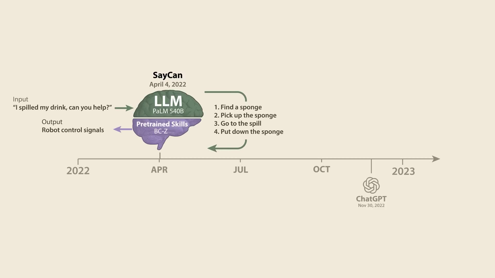
2022년 4월 SayCan. 입력 "I spilled my drink, can you help?"를 PaLM 540B LLM이 4개 하위작업(스펀지 찾기 → 집기 → 흘린 곳으로 이동 → 내려놓기)으로 분해하고, 하단의 사전학습 스킬(BC-Z)이 실제 제어 신호를 출력한다. 계획층과 제어층이 완전히 분리된 구조다.
RT-1으로 제어층 교체
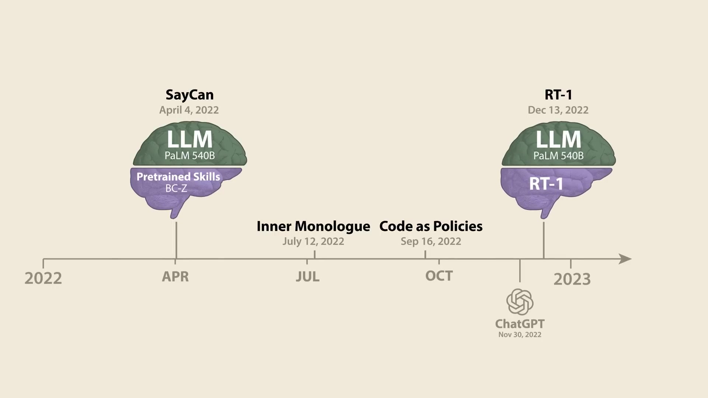
같은 타임라인에 2022년 12월 RT-1이 추가된다. 상단 LLM은 그대로 PaLM이고 하단 제어층만 BC-Z에서 RT-1으로 바뀐다. 전사에 따르면 RT-1은 13만 건 이상의 사람 시연 데이터와 더 큰 트랜스포머 구조로 훈련되어, 계획층이 고를 수 있는 "행동 메뉴"를 크게 넓혔다.
PaLM-E — 눈을 가진 플래너
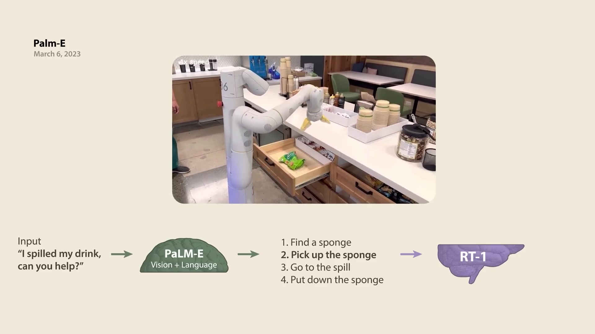
2023년 3월 PaLM-E. 텍스트 전용 PaLM 대신 비전+언어 멀티모달 모델이 플래너 자리에 들어간다. 상단 영상은 연구자가 과자 봉지를 서랍에 반복해서 되돌려 놓아도 PaLM-E가 상황 변화를 인지하고 계획을 다시 세우는 장면이다.
PaLM-E와 RT-1의 구조적 동형성
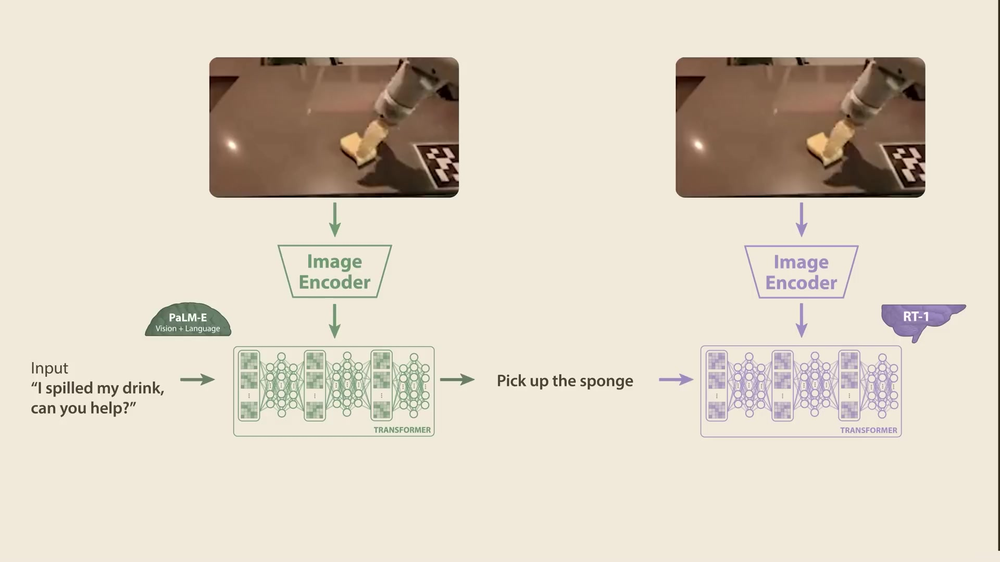
두 모델을 나란히 놓은 도식. 양쪽 모두 카메라 이미지를 Image Encoder에 통과시킨 뒤 Transformer로 보낸다. 차이는 학습 목표뿐이다 — PaLM-E는 텍스트("Pick up the sponge")를, RT-1은 제어 신호를 출력하도록 훈련되었다.
"두 개의 모델이 정말 필요한가?"
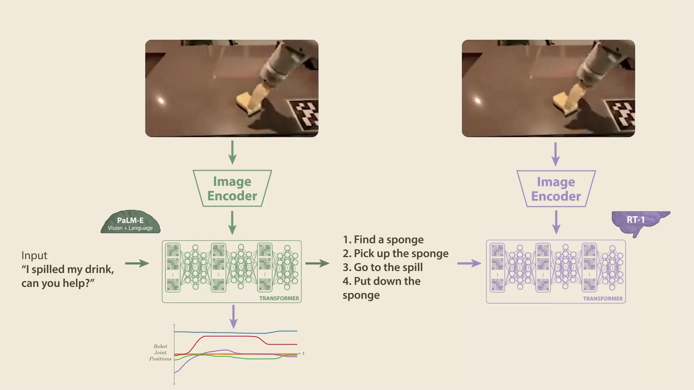
같은 도식에서 PaLM-E 트랜스포머로부터 곧바로 로봇 관절 위치(Robot Joint Positions) 시계열이 뻗어 나온다. RT-1을 하나의 강력한 엔드투엔드 모델로 흡수할 수 있는가라는 질문을 시각적으로 제기하는 장면이다.
RT-2 — 학습 데이터에 없던 개념으로의 일반화
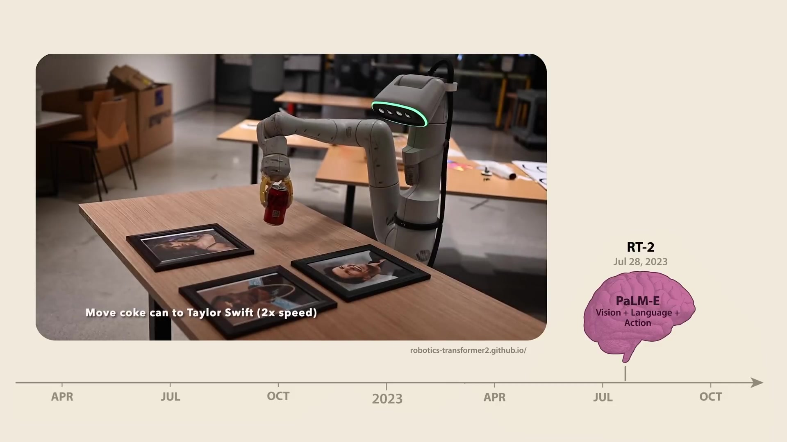
2023년 7월 RT-2. 로봇 제어 학습 데이터에 테일러 스위프트가 있었을 리 없으므로, 이 과제를 풀려면 인터넷 규모 사전학습에서 얻은 추상 개념과 로봇 제어 에피소드를 연결해야만 한다. 영상이 이 "인상적이지 않은" 데모를 결정적 사건으로 보는 이유다.
VLA 계보의 완성
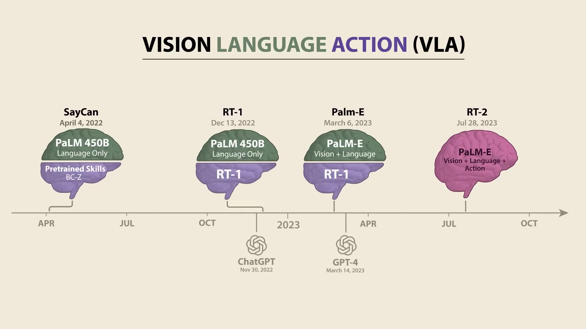
SayCan(2022.4) → RT-1(2022.12) → PaLM-E(2023.3) → RT-2(2023.7)의 전체 타임라인과 ChatGPT·GPT-4 출시 시점이 함께 표시된다. RT-2에서 처음으로 상·하단이 하나의 분홍색 뇌(Vision + Language + Action)로 합쳐지며 VLA라는 명칭이 붙는다.
데모는 초라했다. 그러나 학습 데이터에 없던 개념이
처음으로 로봇의 행동이 되었다. — RT-2가 VLA라는 이름을 얻은 이유
π₀ — 더 작아진 두뇌, 더 정교해진 손
RT-2 팀의 이탈, 그리고 2024년 10월 Physical Intelligence의 답안
RT-2 데모 이후 1년 안에 Karol Hausman을 비롯한 핵심 인력이 구글을 떠나 Physical Intelligence를 세웠다. 이들이 내놓은 π₀는 역설적인 수치를 보여준다. 모델은 작아졌는데 할 수 있는 일은 훨씬 정교해졌다.
| 항목 | RT-2 (2023.7, Google) | π₀ (2024.10, Physical Intelligence) |
|---|---|---|
| 파라미터 | 5–55B | 3.3B |
| 추론 하드웨어 | 멀티-TPU 클러스터 (오프보드) | Nvidia RTX 4090 단일 GPU (온보드 가능) |
| 추론 시간 | 200–1000ms | 73ms |
| 과제 수준 | 물체 집기·재배치 중심 | 세탁물 개기, 오렌지 껍질 벗기기, 처음 보는 주방 정리 |
수치 출처: 영상 00:11:00 화면에 직접 표시된 값.
RT-2 vs π₀ 사양 비교
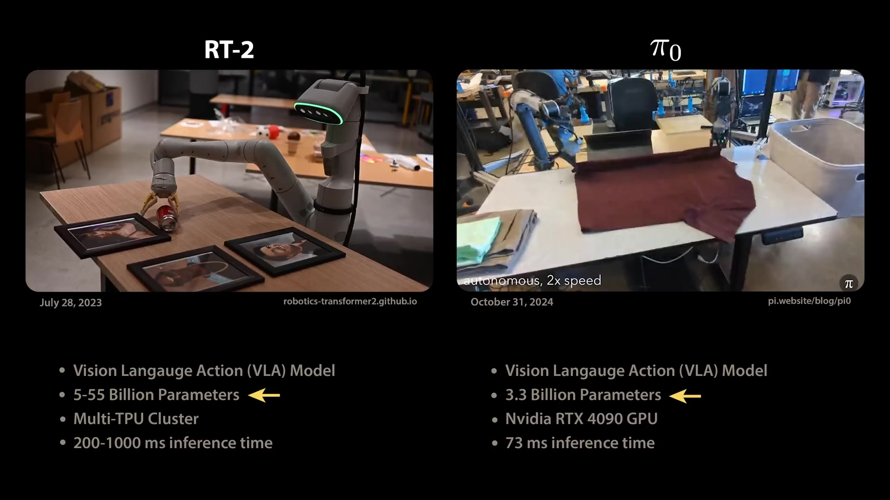
화면에 직접 표시된 수치: RT-2는 5–55B 파라미터, 멀티-TPU 클러스터, 200–1000ms 추론. π₀는 3.3B 파라미터, RTX 4090 단일 GPU, 73ms 추론. 성능이 올라갔는데 모델은 오히려 작아졌다는 것이 이 절의 핵심이다.
π₀의 입출력 — 카메라 3대와 14개 관절
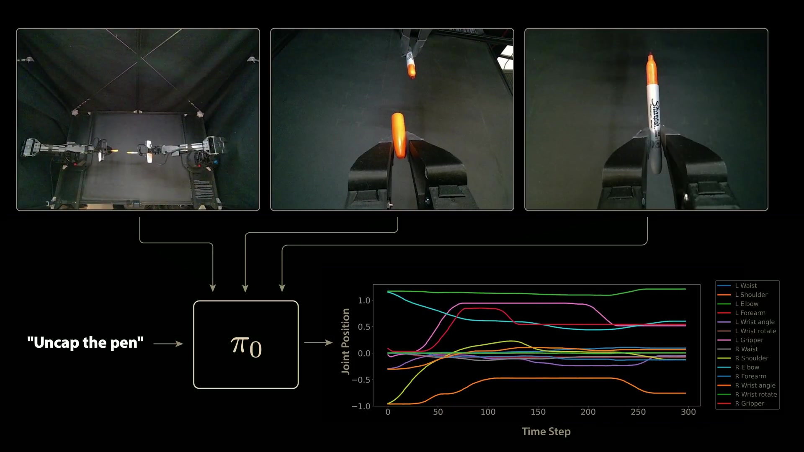
Aloha 양팔 플랫폼에서 "Uncap the pen" 프롬프트를 처리하는 π₀. 입력은 오버헤드 1대 + 각 손목 1대씩 총 3개 시점이고, 출력은 14개 관절 (팔당 Waist·Shoulder·Elbow·Forearm·Wrist angle·Wrist rotate·Gripper)의 위치 시계열이다. 화면 범례에 14개 관절명이 모두 읽힌다.
PaliGemma + Action Expert
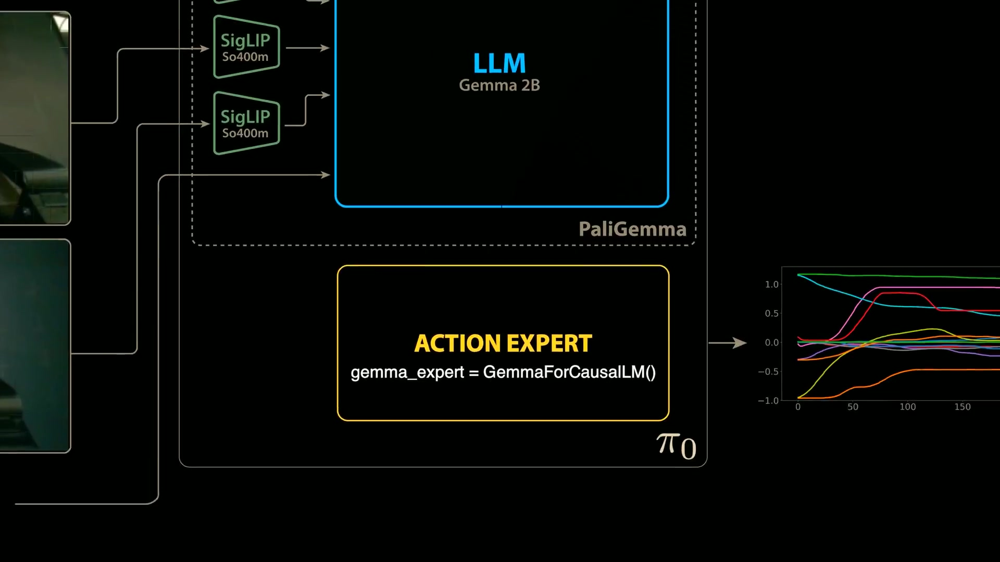
π₀ 내부 확대도. 점선 상자 PaliGemma 안에 SigLIP So400m 인코더들과 LLM(Gemma 2B)이
들어 있고, 그 아래 노란 상자가 Action Expert다. 상자 안 코드
gemma_expert = GemmaForCausalLM()이 그대로 보인다 — 전사에서
"코드베이스에서 Action Expert가 Gemma 모델로 인스턴스화된다"고 말한 부분의 화면 근거다.
어텐션 해부 — "pen"이 펜이 되는 순간
단어 하나가 이미지 패치를 찾아내는 과정을 숫자로 확인한다
π₀의 앞단은 이렇게 요약된다. 카메라 3대의 이미지가 각각 256개 패치로 쪼개져 SigLIP So400m 인코더를 거치면 768개의 임베딩 벡터(길이 2048)가 되고, 프롬프트 "Uncap the pen"의 4개 토큰이 더해져 총 772개 입력이 Gemma 2B로 들어간다. Gemma 2B는 18개 트랜스포머 블록, 블록당 8개 어텐션 헤드로 구성된다. 이 구조가 그대로 뒤의 Action Expert와 공유된다는 점이 π₀ 설계의 복선이다.
이미지 패치화 — 768 패치
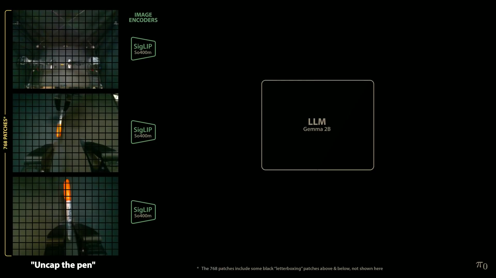
3개 카메라 이미지가 각각 격자로 쪼개져 SigLIP So400m 인코더로 들어간다. 왼쪽 세로 라벨이 "768 PATCHES"이며, 하단 각주는 이 768개에 위아래 레터박스 (검은 여백) 패치가 포함되어 있다고 명시한다. 프롬프트는 "Uncap the pen".
Gemma 2B의 내부 — 18블록 × 8헤드
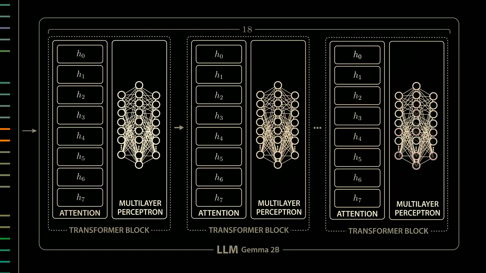
Gemma 2B가 18개 트랜스포머 블록으로 구성되고, 각 블록이 어텐션(h₀–h₇, 즉 8개 헤드)과 다층 퍼셉트론으로 이루어짐을 보여준다. 이 "18블록 × 8헤드" 구조가 뒤에서 Action Expert와 그대로 공유된다.
Query·Key와 내적 값
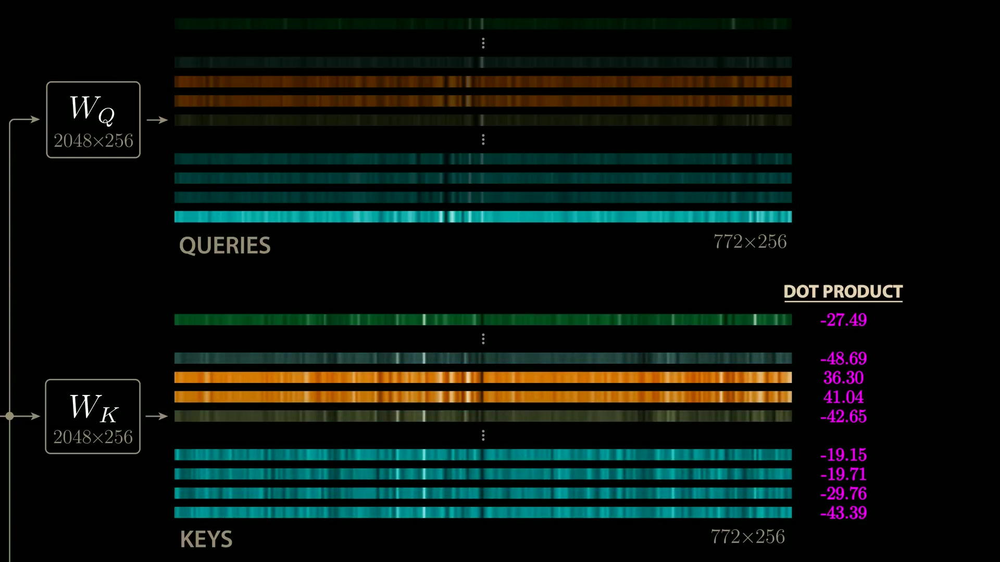
학습 가중치 WQ, WK(각 2048×256)가 입력을 QUERIES(772×256)와 KEYS(772×256)로 변환한다. 오른쪽 DOT PRODUCT 열에서 펜을 담은 두 주황색 행만 양수이고 나머지는 모두 음수다. "pen" 토큰의 쿼리가 펜 이미지 패치와 선택적으로 정렬된다는 정량적 증거다.
| 입력 행 (772개 중) | "pen" 쿼리와의 내적 | 해석 |
|---|---|---|
| 펜을 담은 이미지 패치 ① | +36.30 | 단어 "pen"과 선택적으로 정렬 |
| 펜을 담은 이미지 패치 ② | +41.04 | |
| 그 외 770개 행 | −19 ~ −48 | 모두 음수 — 어텐션에서 배제 |
출처: 영상 00:17:52 화면의 DOT PRODUCT 열.
어텐션 히트맵으로 본 펜 추적
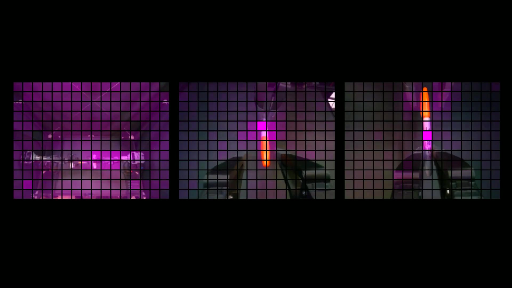
소프트맥스로 정규화한 어텐션 값을 3개 카메라 이미지 위에 마젠타 히트맵으로 겹쳤다. 세 시점 모두에서 밝은 마젠타가 펜(주황색 물체) 위치에 집중된다. 어텐션 헤드가 프롬프트의 단어 "pen"을 이미지 속 펜에 연결하고 있음을 보여준다. 프레임을 이어 붙여 재생하면 이 어텐션이 실제로 펜을 추적한다.
772×772 어텐션 패턴 전체
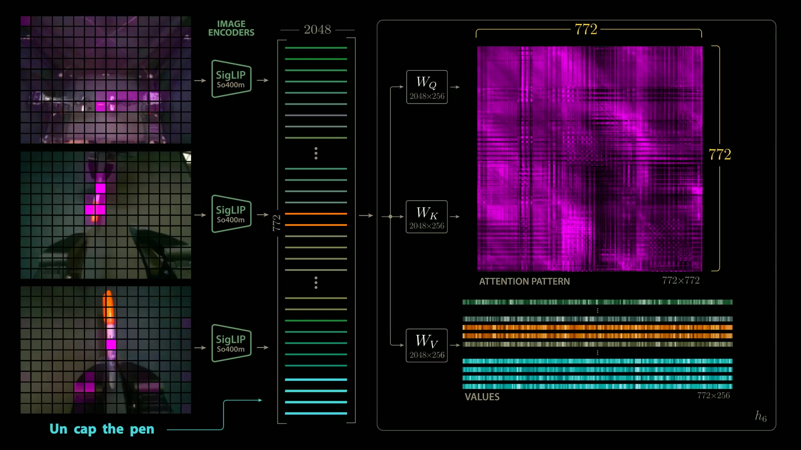
개별 쿼리가 아니라 772개 입력 전체가 서로를 조회한 결과인 772×772 ATTENTION PATTERN 행렬. 우하단에 WV(2048×256)가 만든 VALUES(772×256)가 함께 있고, 좌측에는 772개 임베딩 벡터(길이 2048)가 표시된다. 우측 하단 h₆ 표기는 6번 헤드를 보고 있음을 뜻한다. 소프트맥스 정규화 후 값 행렬과 곱하면 펜 패치의 표현이 "pen" 토큰 위치로 복사·합산된다 — 텍스트와 픽셀의 통합 표현이 형성되는 지점이다.
Action Expert와 KV 캐시 인터페이스
π₀ 설계의 심장 — 두 네트워크가 "거의 하나처럼" 사고하는 방법
Action Expert는 Gemma와 동일한 아키텍처(18블록 × 8헤드)를 갖지만 무작위로 초기화되고, 추론 비용을 낮추기 위해 폭이 좁다(임베딩 1024차원 vs Gemma의 2048차원). 결과를 한 번에 출력하지 않고, 순수 노이즈로 시작한 14×50 행렬을 반복적으로 다듬어 최종 관절 궤적으로 만든다 — AI 이미지 생성의 확산·플로우 매칭과 같은 절차로, π₀는 10회 반복한다.
이 방식이 잘 맞는 이유는 분포의 다봉성이다. 고양이 이미지를 만드는 방법이 여러 가지이듯, 14개 관절로 펜 뚜껑을 여는 방법도 여러 가지다. 단일 정답을 회귀하는 대신, 유효한 궤적 분포에서 하나를 뽑아낸다.
오버헤드 + 좌/우 손목
→ SigLIP So400m 인코더
이미지가 바뀌지 않는 동안 재사용 — 자연어가 아닌 어텐션 키·값이 인터페이스
→ WS(14×1024) → 임베딩 1개
→ 임베딩 50개
각 헤드의 키/값 = 자기 51개 + Gemma 772개 = 823개
Action Expert의 첫 번째 입력 — 현재 상태
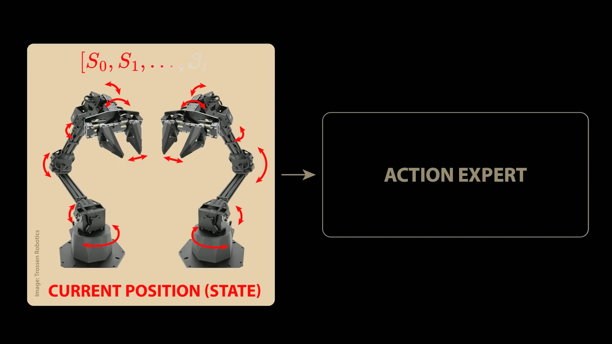
Aloha 양팔의 가동 관절을 빨간 화살표로 표시한 CURRENT POSITION (STATE) 패널이 Action Expert로 들어간다. 상단 수식 [S₀, S₁, …]이 관절 위치 벡터를 나타낸다.
출력 형태 — 관절 × 타임스텝 행렬
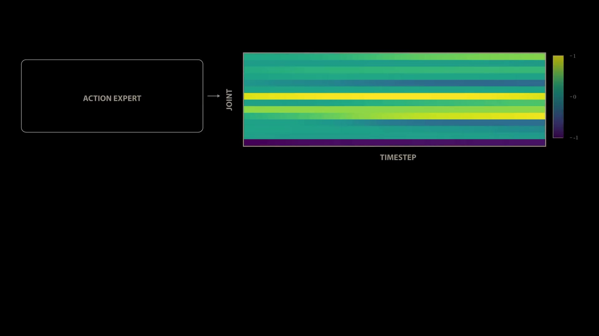
Action Expert의 출력은 세로축 JOINT, 가로축 TIMESTEP인 행렬이며 이미지처럼 시각화된다. 각 행이 하나의 관절, 각 열이 하나의 미래 시점이다. 전사 기준 실제 크기는 14×50이다.
상태 + 랜덤 액션 → 51개 임베딩
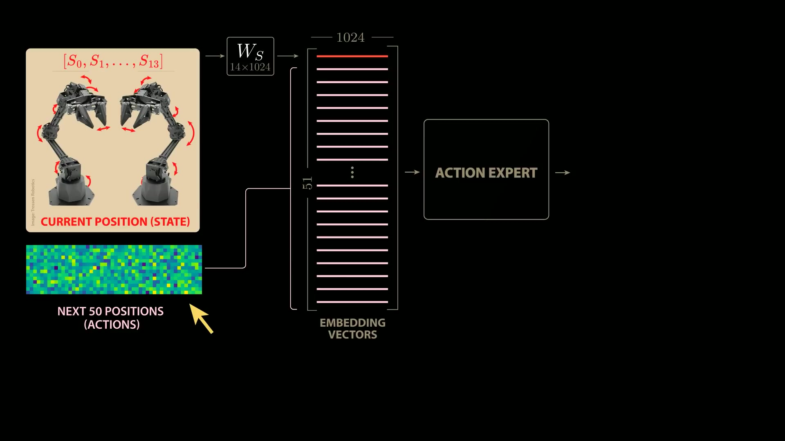
관절 상태 벡터 [S₀,…,S₁₃]가 WS(14×1024)를 거쳐 임베딩 1개가 되고, 여기에 NEXT 50 POSITIONS (ACTIONS) — 아직 랜덤 노이즈 상태인 행렬 — 이 더해져 총 51개 임베딩 벡터(길이 1024)가 Action Expert 입력이 된다. Gemma가 2048차원인 것과 달리 1024차원을 쓰는 점이 화면에 드러난다.
823개 키 — 두 모델을 잇는 인터페이스
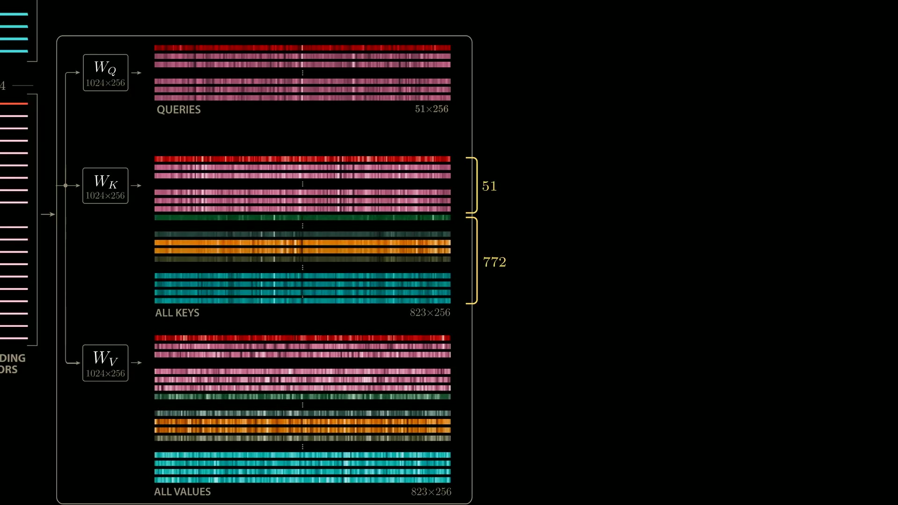
Action Expert의 QUERIES는 51×256이지만, ALL KEYS와 ALL VALUES는 823×256이다. 오른쪽 중괄호가 그 823이 자기 자신의 51개와 Gemma에서 가져온 772개의 합임을 명시한다. WQ·WK·WV가 모두 1024×256으로, Gemma의 2048×256과 구분된다. π₀ 설계의 핵심이 한 장에 담긴 프레임이다.
블록 단위로 공유되는 KV 캐시
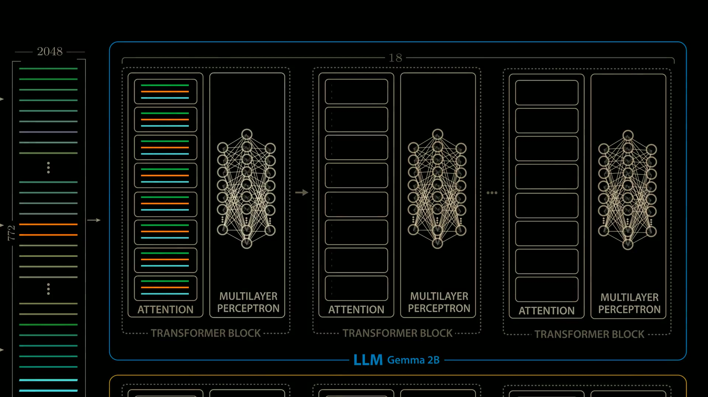
파란 테두리의 Gemma 2B 18개 블록에서 각 어텐션이 계산한 키/값(초록·주황·하늘색 줄)이 아래쪽 노란 테두리 Action Expert 블록으로 내려간다. 이미지가 바뀌지 않는 동안 이 캐시를 재사용하므로, 플로우 매칭을 10회 반복해도 PaliGemma를 다시 돌릴 필요가 없다 — 10회 반복이 곧 10배 비용이 되지 않는 이유다.
SayCan은 자연어로 말을 건넸고,
π₀는 어텐션의 키·값을 직접 건넨다. — 두 세대를 가르는 인터페이스의 차이
π₀ 공개 이후 학습 방식과 모델은 개선되었지만, "긴밀 결합된 멀티모달 LLM + 플로우 매칭 Action Expert"라는 핵심 구조는 그대로 유지되고 있다.
반론 — "VLA are doomed"
Yann LeCun의 반론
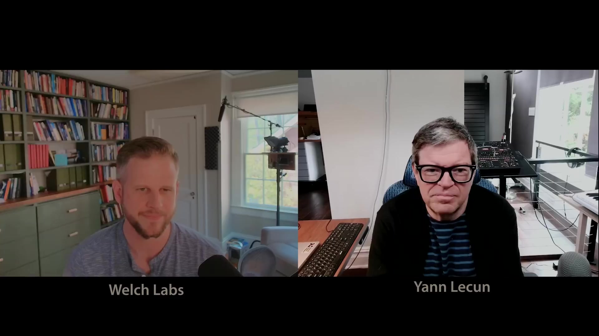
진행자와 Yann LeCun의 화상 인터뷰. JEPA 계열이 VLA를 앞지를 것으로 보느냐는 질문에 LeCun은 즉답한다.
Oh, absolutely. VLA are doomed. — Yann LeCun, 영상 인터뷰 중 (00:30:16)
다만 영상에 담긴 것은 인터뷰 중의 짧은 단언이며, 그 근거는 이 영상에서 다뤄지지 않는다. 제작진은 JEPA 기반 월드 모델 접근을 다음 편에서 다루겠다고 예고했다. 노선 경쟁은 아직 열려 있다.
시사점
연구 관점 — 가치는 전이 경로에 있다
VLA의 가치는 제어 정확도가 아니라 사전학습 지식의 전이 경로에 있다. 로봇 데이터가 부족한 도메인에서는 "얼마나 많은 시연을 모으는가"보다 "어떤 백본에 무엇을 어떻게 붙이는가"가 성능을 좌우할 수 있다.
설계 관점 — 배울 것은 크기가 아니라 인터페이스다
π₀에서 배울 점은 모델 크기가 아니라 인터페이스 설계다. 두 네트워크의 아키텍처를 일치시켜 KV를 직접 공유하는 방식은, 텍스트 병목을 없애면서도 모듈성과 캐시 재사용이라는 실용적 이득을 동시에 얻는다. 이종 모듈을 결합할 때 참고할 만한 패턴이다.
역사 관점 — RALPH의 교훈
1995년 카네기멜런의 RALPH가 미 대륙을 98.2% 자율주행했지만, 자율주행차 상용화는 그로부터 한참 뒤였고 오늘날의 자율주행은 당시와 전혀 다른 방식으로 작동한다. 인상적인 데모와 실용화 사이의 간극, 그리고 최종 승자가 지금의 방식이 아닐 수 있다는 가능성 — 영상은 이 두 가지 경계를 VLA에도 똑같이 적용한다.
근거와 한계
이 리포트의 수치가 어디에서 왔는지 — 신뢰도 등급별 정리
| 수치·사실 | 근거 | 신뢰도 |
|---|---|---|
| 파라미터(5–55B / 3.3B), 추론 시간(200–1000ms / 73ms) | 화면 직접 확인 (00:11:00) | 화면 검증 |
| 768 패치 (레터박스 포함) | 화면 직접 확인 (00:13:58) | 화면 검증 |
| 18블록 × 8헤드 구조 | 화면 직접 확인 (00:15:28) | 화면 검증 |
| 행렬 차원(2048×256, 1024×256)과 내적 값(+36.30, +41.04), 823=51+772 | 화면 직접 확인 (00:17:52, 00:19:22, 00:26:52) | 화면 검증 |
| WS 14×1024 | 화면 직접 확인 (00:24:08) | 화면 검증 |
| 14×50 액션 크기, 플로우 매칭 10회, 13만+ 시연, 772 = 768+4 분해 | 자동 생성 자막 | 자막 근거 — 원문 확인 권장 |
인용 전 확인 체크리스트
- 이 영상에는 사람이 작성한 자막이 없다. 자동 생성 자막 기반 수치는 인용 전 원 논문(π₀, RT-2)과 대조할 것.
- 인명 표기 주의 — 자막의 "Carol Hausman"은 실제로 Karol Hausman이다.
- 영상 자체 그래픽에도 오류가 있다 — 00:08:56 프레임의 PaLM "450B" 표기는 내레이션·타 프레임과 불일치하며, 실제 PaLM은 540B다.
- 영상의 30:26 이후는 포스터·서적 판매와 국제 배송 안내 등 채널 공지이므로 이 리포트의 요약 범위에서 제외했다.
마치며
RT-2의 어색한 콜라 캔 데모에서 π₀의 세탁물 개기까지 걸린 시간은 15개월 남짓이다. 그 사이에 바뀐 것은 모델의 크기가 아니라 지식이 흐르는 통로였다 — 자연어라는 좁은 관에서, 어텐션의 키·값이라는 넓은 관으로. LeCun의 단언처럼 VLA가 막다른 길일지, 아니면 자율주행의 역사처럼 전혀 다른 승자가 나타날지는 아직 알 수 없다. 확실한 것은 하나다. 로봇의 두뇌를 여는 열쇠가 이제 로봇 공학 바깥, 인터넷 규모의 사전학습에서 오고 있다는 사실이다.
더 깊이 보려면 Welch Labs의 원본 영상(35:02)을 추천한다. 각 장면의 타임스탬프 배지를 누르면 해당 시점으로 바로 이동한다.